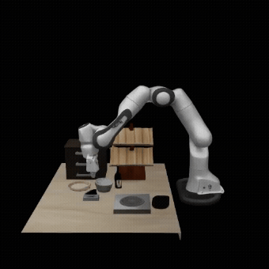
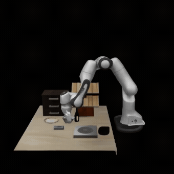
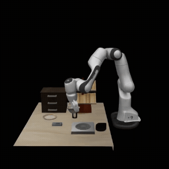
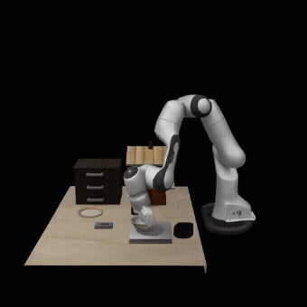

Task: Put the bowl on the stove




Learned world models are emerging as a powerful paradigm in robotics, offering a promising path toward task generalization, long-horizon planning, and flexible decision-making. However, prevailing approaches often operate on 2D video sequences, inherently lacking the 3D geometric understanding necessary for precise spatial reasoning and physical consistency. We introduce a Structured 4D Latent World Model, which predicts the evolution of a scene’s 3D structure in a structured latent space conditioned on observations and textual instructions. Our representation encodes the scene holistically and can be decoded into diverse 3D formats, enabling a more complete and physically consistent scene understanding. This structured 4D latent world model serves as a planner, generating future scenes that are translated into executable actions by a goal-conditioned inverse dynamics module. Experiments demonstrate that our model generates futures with superior visual quality, physical consistency, and multi-view coherence compared to state-of-the-art video-based planners. Consequently, our full planning pipeline achieves superior performance on complex manipulation tasks, exhibits robust generalization to novel visual conditions, and proves effective on real-world robotic platforms.

Our 4D latent world model integrates multi-view images and text instructions to forecast future 3D dynamics, enabling robots to plan and execute tasks that require precise 3D understanding.


Demo 1
Demo 2
Demo 3

All models were trained on fixed global views but tested on a novel local viewpoint. Our model generates a consistent 3D scene from the unseen view, which significantly outperforms baselines.